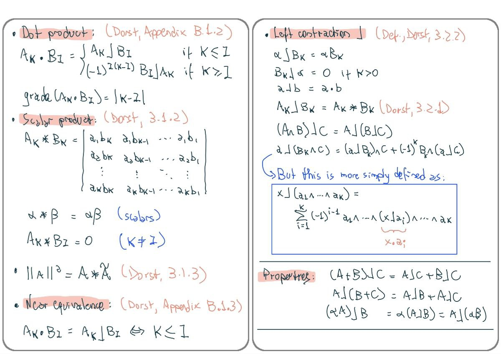
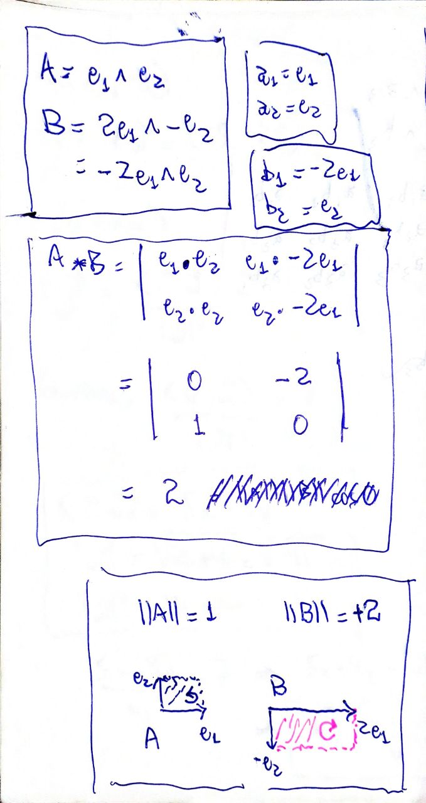
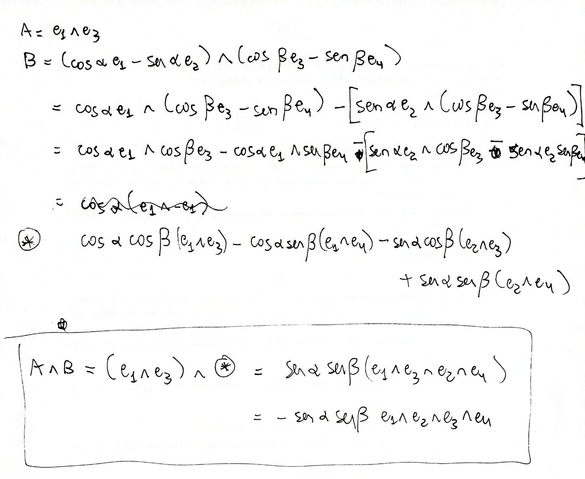
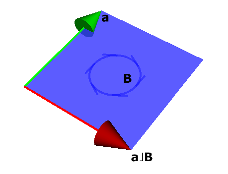
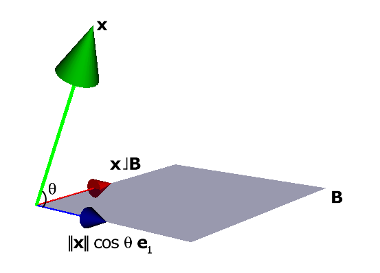
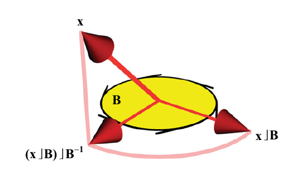
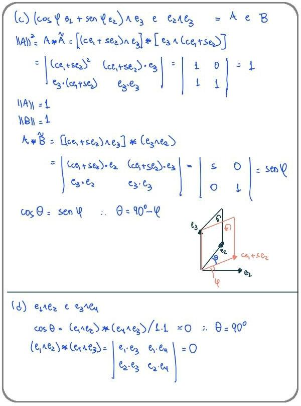
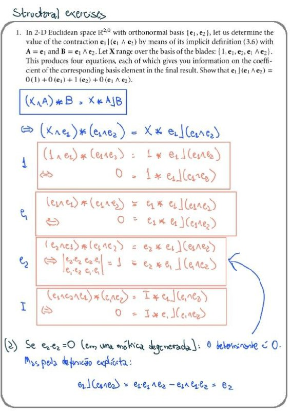
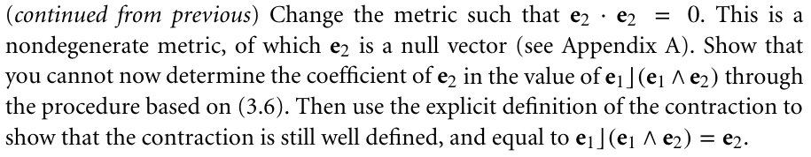
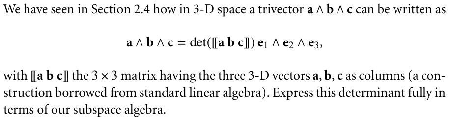

3 METRIC PRODUCTS OF SUBSPACES
% projeção
Resumo

3.1 SIZING UP SUBSPACES
3.1.1 METRICS, NORMS, AND ANGLES
Dada a definição de um produto interno \(\mathbf{a} \cdot \mathbf{b}\), podemos definir
A norma de um vetor \(\mathbf{a}\) como
\[ || \mathbf{a} ||^2 = \mathbf{a} \cdot \mathbf{a} \]
O cosseno do ângulo entre dois vetores \(\mathbf{a}\) e \(\mathbf{b}\) como
\[ \cos \theta = \frac{\mathbf{a} \cdot \mathbf{b}}{|| \mathbf{a} ||\, ||\mathbf{b} ||} \]
Este capítulo generaliza o produto interno para blades e multivetores.
3.1.2 DEFINITION OF THE SCALAR PRODUCT \(*\)
Por enquanto, vamos definir o produto interno de dois blades de mesmo grau.
O resultado sempre vai ser um escalar.
Generaliza o produto escalar de vetores (que, afinal, são 1-blades).
Considere
\[ \begin{aligned} \mathbf{A} &= \mathbf{a}_1 \wedge \mathbf{a}_2 \wedge \cdots \wedge \mathbf{a}_k \\ \mathbf{B} &= \mathbf{b}_1 \wedge \mathbf{b}_2 \wedge \cdots \wedge \mathbf{b}_k \end{aligned} \]
O produto escalar \(\mathbf{A} * \mathbf{B}\) é definido como

Exemplo:

3.1.3 THE SQUARED NORM OF A SUBSPACE
A norma de um blade \(\mathbf{A}\) usa o produto escalar entre \(\mathbf{A}\) e seu reverso \(\widetilde{\mathbf{A}}\):

Parecido com o que acontece com números complexos, onde o quadrado da norma é o produto entre o número complexo e seu conjugado:
\[ z\bar z = (a+bi)(a-bi) = a^2 -abi+abi -b^2i^2 = a^2 + b^2 = ||z||^2 \]
3.1.4 THE ANGLE BETWEEN SUBSPACES
O cosseno do ângulo entre dois blades \(\mathbf{A}\) e \(\mathbf{B}\) usa o produto escalar entre \(\mathbf{A}\) e o reverso \(\widetilde{\mathbf{B}}\):
\[ \cos \theta = \frac{\mathbf{A} * \widetilde{\mathbf{B}}}{||\mathbf{A}||\,||\mathbf{B}||} \]
De novo, temos a semelhança com números complexos, onde o produto \(z_1 \cdot \overline{z_2}\), tais que o argumento de \(z_1\) é \(\alpha\) e o argumento de \(z_2\) é \(\beta\), resulta em um número complexo \(z_3\) cujo argumento é \(\alpha - \beta\):


Em \(\mathbb{R}^2\), no geral, para dois 2-blades \(\mathbf{A}\) e \(\mathbf{B}\), temos que \(\mathbf{A} * \widetilde{\mathbf{B}} = ||\mathbf{A}||\,||\mathbf{B}||\), e o ângulo é sempre zero:

Em \(\mathbb{R}^3\):
\(\mathbf{A} = \mathbf{a}_1 \wedge \mathbf{a}_2\).
\(\mathbf{B} = \mathbf{b}_1 \wedge \mathbf{b}_2\).
Queremos calcular \(\mathbf{A} * \widetilde{\mathbf{B}}\).
O primeiro passo é achar um vetor \(\mathbf{c}\) que seja fator comum entre os dois blades.
Para facilitar, escolhemos \(\mathbf{c}\) com \(||\mathbf{c}|| = 1\).
Fatoramos \(\mathbf{A} = \mathbf{a} \wedge \mathbf{c}\), com \(\mathbf{a} \perp \mathbf{c}\).
Fatoramos \(\mathbf{B} = \mathbf{b} \wedge \mathbf{c}\), com \(\mathbf{b} \perp \mathbf{c}\).
Situação atual:

Daí,

Em \(\mathbb{R}^n, n > 3\) (caso geral):
Depois de separar todos os fatores comuns, o resultado é
Apenas escalares, e o ângulo é zero, ou
Apenas vetores, e o ângulo entre os blades é o ângulo entre estes vetores, ou
\(k\)-blades disjuntos (\(k \geq 2\)), e o cosseno é o produto dos cossenos das duas ou mais rotações em planos ortogonais necessárias para alinhar os blades originais. Se uma destas rotações for de \(90\) graus, o cosseno é zero.
Exemplo Dorst, p. 70 (em \(\mathbb{R}^4\)):
\[ \begin{aligned} A &= \mathbf{e}_{1} \wedge \mathbf{e}_{3} \\ B &= (\cos\alpha\,\mathbf{e}_{1} - \mathop{\mathrm{\text{sen}}}\alpha\,\mathbf{e}_{2}) \wedge (\cos\beta\,\mathbf{e}_{3} - \mathop{\mathrm{\text{sen}}}\beta\,\mathbf{e}_{4}) \end{aligned} \]
- Como \(\mathbf{A} \wedge \mathbf{B}\) tem grau \(4\), com \(\mathbf{A}\) e \(\mathbf{B}\) ambos de grau \(2\), \(\mathbf{A}\) e \(\mathbf{B}\) são disjuntos:

O blade \(\mathbf{A}\) está no plano \(XZ\).
O blade \(\mathbf{B}\) é definido por dois vetores:
\[ \mathbf{B} = \mathbf{b}_1 \wedge \mathbf{b}_2 \]
onde
\(\mathbf{b}_1\) é o vetor \(\mathbf{e}_{1}\) rotacionado de \(\alpha\) no plano \(XY\);
\(\mathbf{b}_2\) é o vetor \(\mathbf{e}_{3}\) rotacionado de \(\beta\) no plano \(ZW\) (onde \(W\) é o eixo correspondente a \(\mathbf{e}_{4}\)).
Verifique que \(||\mathbf{A}|| = ||\mathbf{B}|| = 1\).
Calculando \(\mathbf{A} * \widetilde{\mathbf{B}}\):
\[ \begin{aligned} \mathbf{A} * \widetilde{\mathbf{B}} &= (\mathbf{e}_{1} \wedge \mathbf{e}_{3}) * (\cos\alpha\,\mathbf{e}_{1} - \mathop{\mathrm{\text{sen}}}\alpha\,\mathbf{e}_{2}) \wedge (\cos\beta\,\mathbf{e}_{3} - \mathop{\mathrm{\text{sen}}}\beta\,\mathbf{e}_{4}) \\ &= \begin{vmatrix} \mathbf{e}_{1} \cdot (\cos\alpha\,\mathbf{e}_{1} - \mathop{\mathrm{\text{sen}}}\alpha\,\mathbf{e}_{2}) & \mathbf{e}_{1} \cdot (\cos\beta\,\mathbf{e}_{3} - \mathop{\mathrm{\text{sen}}}\beta\,\mathbf{e}_{4}) \\ \mathbf{e}_{3} \cdot (\cos\alpha\,\mathbf{e}_{1} - \mathop{\mathrm{\text{sen}}}\alpha\,\mathbf{e}_{2}) & \mathbf{e}_{3} \cdot (\cos\beta\,\mathbf{e}_{3} - \mathop{\mathrm{\text{sen}}}\beta\,\mathbf{e}_{4}) \end{vmatrix} \\ &= \begin{vmatrix} \cos\alpha & 0 \\ 0 & \cos\beta \end{vmatrix} \\ &= \cos\alpha\,\cos\beta \end{aligned} \]
Se \(\alpha\) ou \(\beta\) for \(90\) graus, os blades \(\mathbf{A}\) e \(\mathbf{B}\) são considerados ortogonais.
Rotações em planos, não em torno de eixosVocê deve estar acostumado a pensar em uma rotação como algo que acontece em torno de um eixo.
Isto acontece por causa da nossa experiência no espaço tridimensional em que vivemos.
Mas isto é problemático, pois
Em \(\mathbb{R}^2\), o eixo de qualquer rotação não está contido no espaço!
Em \(\mathbb{R}^n\), com \(n \geq 4\), uma rotação pode se dar em torno de mais de um eixo ao mesmo tempo!
Em álgebra geométrica, o costume é pensar em rotações como ocorrendo em planos. Isto evita os problemas acima e trata rotações de maneira uniforme em qualquer número de dimensões.
Em todos os casos, o plano no qual se dá a rotação é representado por um bivetor.
Mais adiante, vamos abordar rotações em mais detalhes.
3.2 FROM SCALAR PRODUCT TO CONTRACTION
O produto escalar de dois blades de mesmo grau sempre resulta em um escalar, como já diz o nome.
Este escalar reflete as magnitudes e as direções relativas dos dois blades.
Agora, vamos generalizar a idéia para blades de graus diferentes.
O resultado é o produto interno.
Mas, em vez de definir o produto interno, alguns livros preferem trabalhar com as operações de contração à esquerda (\(\rfloor\)) e à direita (\(\lfloor\)).
As contrações generalizam o produto escalar: se \(\mathbf{A}\) e \(\mathbf{B}\) têm o mesmo grau, então
\[ \mathbf{A} \rfloor\mathbf{B} = \mathbf{A} \lfloor\mathbf{B} = \mathbf{A} * \mathbf{B} \]
3.2.1 IMPLICIT DEFINITION OF CONTRACTION \(\rfloor\)
Um primeiro exemplo:
\(\mathbf{B}\) é um \(2\)-blade;
\(\mathbf{a}\) é um vetor no mesmo plano que \(\mathbf{B}\).
A contração de \(\mathbf{a}\) sobre \(\mathbf{B}\), escrita como \(\mathbf{a} \rfloor\mathbf{B}\), é o vetor em vermelho na Figura 3.1.

Figura 3.1: Contração \(\mathbf{a} \rfloor\mathbf{B}\) Imagine que o vetor \(\mathbf{a}\) foi “contraído”, levando consigo, nesta contração, a dimensão de \(\mathbf{B}\) correspondente à direção de \(\mathbf{a}\).
O resultado é um vetor ortogonal a \(\mathbf{a}\), contido no plano de \(\mathbf{B}\).
Informalmente, \(\mathbf{a} \rfloor\mathbf{B}\) é o que resta em \(\mathbf{B}\) depois que \(\mathbf{a}\) é “retirado”.
Em breve, vamos ver como calcular a magnitude de \(\mathbf{a} \rfloor\mathbf{B}\).
Outro exemplo, onde agora \(\mathbf{a}\) não está no plano de \(\mathbf{B}\):
A Figura 3.2 mostra a situação.

Figura 3.2: Contração \(\mathbf{a} \rfloor\mathbf{B}\) O resultado continua sendo um vetor ortogonal a \(\mathbf{a}\), contido no plano de \(\mathbf{B}\), mas sua magnitude é menor do que na Figura 3.1.
Vamos ver, em breve, que apenas a componente de \(\mathbf{a}\) paralela a \(\mathbf{B}\) — i.e., a projeção de \(\mathbf{a}\) sobre o plano de \(\mathbf{B}\) — é levada em consideração no cálculo da contração \(\mathbf{a} \rfloor\mathbf{B}\). Isto condiz com a idéia de produto interno, cujo valor aumenta à medida que o ângulo \(\theta\) (com \(0 \leq \theta \leq \pi/2\)) entre dois objetos aumenta.
No caso extremo, se \(\mathbf{a}\) for ortogonal a \(\mathbf{B}\), a contração \(\mathbf{a} \rfloor\mathbf{B}\) será nula, como mostra a Figura 3.3. De novo, é o esperado, uma vez que o produto interno deve ser nulo quando os objetos são ortogonais.

Figura 3.3: Contração \(\mathbf{a} \rfloor\mathbf{B}= 0\)
Mais um exemplo, agora em \(\mathbb{R}^3\): a Figura 3.4 mostra, em vermelho, o resultado da contração do \(2\)-blade \(\mathbf{B}\) sobre o \(3\)-blade \(\mathbf{C}\).

Figura 3.4: Contração de \(2\)-blade sobre \(3\)-blade Ainda em \(\mathbb{R}^3\), a Figura 3.5 mostra o resultado da contração do vetor \(\mathbf{a}\) sobre o \(3\)-blade \(\mathbf{B}\).

Figura 3.5: Contração de vetor sobre \(3\)-blade A partir destes exemplos, observe que
O resultado da contração à esquerda sempre está contido no operando do lado direito.
O resultado da contração à esquerda sempre é ortogonal ao operando do lado esquerdo.
O resultado da contração à esquerda sempre tem o grau igual à diferença entre os graus dos operandos (grau do operando direito menos o grau do operando esquerdo).
3.2.2 COMPUTING THE CONTRACTION EXPLICITLY
A contração à esquerda é uma função
\[ \rfloor: \bigwedge^k \mathbb{R}^n \,\times\, \bigwedge^l \mathbb{R}^n \,\to\, \bigwedge^{l-k} \mathbb{R}^n \]
A contração à esquerda distribui sobre a adição e é bilinear:
\[ \begin{aligned} (\mathbf{A} + \mathbf{B}) \rfloor\mathbf{C} &= \mathbf{A} \rfloor\mathbf{C} + \mathbf{B} \rfloor\mathbf{C} \\ \mathbf{A} \rfloor(\mathbf{B} + \mathbf{C}) &= \mathbf{A} \rfloor\mathbf{B} + \mathbf{A} \rfloor\mathbf{C} \\ (\alpha \mathbf{A}) \rfloor\mathbf{B} &= \alpha(\mathbf{A} \rfloor\mathbf{B}) \\ &= \mathbf{A} \rfloor(\alpha \mathbf{B}) \end{aligned} \]
onde \(\alpha\) é um escalar.
Além disso,
\[ \begin{aligned} \alpha \rfloor\mathbf{B} &= \alpha \mathbf{B} \\ \mathbf{B} \rfloor\alpha &= 0 \quad \text{se } \text{grau}(\mathbf{B}) > 0 \\ \mathbf{a} \rfloor\mathbf{b} &= \mathbf{a} \cdot \mathbf{b} \\ (\mathbf{A} \wedge \mathbf{B}) \rfloor\mathbf{C} &= \mathbf{A} \rfloor(\mathbf{B} \rfloor\mathbf{C}) \\ \mathbf{a} \rfloor(\mathbf{B} \wedge \mathbf{C}) &= (\mathbf{a} \rfloor\mathbf{B}) \wedge \mathbf{C} \,+\, (-1)^{\text{grau}(\mathbf{B})} \mathbf{B} \wedge (\mathbf{a} \rfloor\mathbf{C}) \end{aligned} \tag{3.1}\]
Estas igualdades permitem calcular qualquer contração à esquerda recursivamente.
3.2.3 ALGEBRAIC SUBTLETIES
A última igualdade do bloco (3.1) pode ser substituída por
\[ \begin{aligned} &{} \mathbf{x} \rfloor(\mathbf{a}_1 \wedge \mathbf{a}_2 \wedge \cdots \wedge \mathbf{a}_k) \\ &= \sum_{i=1}^k (-1)^{i-1} \mathbf{a}_1 \wedge \mathbf{a}_2 \wedge \cdots \wedge (\mathbf{x} \rfloor\mathbf{a}_i) \wedge \cdots \wedge \mathbf{a}_k \\ &= \sum_{i=1}^k (-1)^{i-1} \mathbf{a}_1 \wedge \mathbf{a}_2 \wedge \cdots \wedge (\mathbf{x} \cdot \mathbf{a}_i) \wedge \cdots \wedge \mathbf{a}_k \end{aligned} \tag{3.2}\]
o que reduz contrações de vetores sobre blades em contrações de vetores sobre vetores (que resultam em escalares).
3.3 GEOMETRIC INTERPRETATION OF THE CONTRACTION
Muito desta seção já foi comentado nos exemplos da Seção 3.2.1 acima:
\(\mathbf{A} \rfloor\mathbf{B}\) é um blade quando \(\mathbf{A}\) e \(\mathbf{B}\) são blades.
\(\mathbf{A} \rfloor\mathbf{B}\) é um subespaço contido em \(\mathbf{B}\):
\[ \mathbf{A} \rfloor\mathbf{B} = (\mathbf{A}' \wedge \mathbf{a}) \rfloor\mathbf{B} = \mathbf{A}' \rfloor(\mathbf{a} \rfloor\mathbf{B}) \]
O lado direito \(\mathbf{a} \rfloor\mathbf{B}\) representa um subespaço contido em \(\mathbf{B}\), pois a Equação 3.2 só contém vetores de \(\mathbf{B}\) no seu lado direito.
\(\mathbf{x} \rfloor\mathbf{A} = 0\) significa que \(\mathbf{x}\) é perpendicular a todos os vetores em \(\mathbf{A}\).
De fato, a única maneira de o lado direito da Equação 3.2 ser zero é se \(\mathbf{x} \rfloor\mathbf{a}_i\) for zero para todo \(i\).
O resultado de \(\mathbf{A} \rfloor\mathbf{B}\) é perpendicular a \(\mathbf{A}\):
- Tome qualquer vetor \(\mathbf{a} \in \mathbf{A}\).
- Então \(\mathbf{a} \wedge \mathbf{A} = 0\).
- Pela definição, \(\mathbf{a} \rfloor(\mathbf{A} \rfloor\mathbf{B}) = (\mathbf{a} \wedge \mathbf{A}) \rfloor\mathbf{B} = 0\rfloor\mathbf{B} = 0\).
- Isto significa que \(\mathbf{a}\) é perpendicular a \(\mathbf{A} \rfloor\mathbf{B}\).
A norma de \(\mathbf{A} \rfloor\mathbf{B}\) é proporcional a \(||\mathbf{A}||\), a \(||\mathbf{B}||\), e ao cosseno do ângulo entre \(\mathbf{A}\) e a projeção de \(\mathbf{A}\) sobre \(\mathbf{B}\).
\(\text{grau}(\mathbf{A} \rfloor\mathbf{B}) = \text{grau}(\mathbf{B}) - \text{grau}(\mathbf{A})\).
Considere, por exemplo, um vetor \(\mathbf{x}\) e um \(2\)-blade \(\mathbf{B}\) definidos como
\[ \begin{aligned} \mathbf{x} &= ||\mathbf{x}||\, (\cos \theta\, \mathbf{e}_{1} + \mathop{\mathrm{\text{sen}}}\theta \, \mathbf{e}_{3}) \\ \mathbf{B} &= ||\mathbf{B}||\, \mathbf{e}_{1} \wedge \mathbf{e}_{2} \end{aligned} \]
A Figura 3.6 mostra a situação.

Figura 3.6: Contração \(\mathbf{x}\rfloor\mathbf{B}\) Observe que
- O vetor \(\mathbf{x}\) está contido no plano de \(\mathbf{e}_{1} \wedge \mathbf{e}_{3}\) (que não é mostrado na figura).
- O vetor \(\mathbf{x}\) faz ângulo \(\theta\) com sua projeção sobre \(\mathbf{e}_{1}\).
Vamos calcular a contração \(\mathbf{x} \rfloor\mathbf{B}\), mostrada em vermelho na Figura 3.6:
\[ \begin{aligned} \mathbf{x} \rfloor\mathbf{B} &= ||\mathbf{x}||\, (\cos \theta\, \mathbf{e}_{1} + \mathop{\mathrm{\text{sen}}}\theta \, \mathbf{e}_{3}) \,\rfloor\, ||\mathbf{B}||\, \mathbf{e}_{1} \wedge \mathbf{e}_{2} \\ &= ||\mathbf{x}||\,||\mathbf{B}||\, [(\cos \theta\, \mathbf{e}_{1} + \mathop{\mathrm{\text{sen}}}\theta \, \mathbf{e}_{3}) \,\rfloor\, (\mathbf{e}_{1} \wedge \mathbf{e}_{2})] \\ &= ||\mathbf{x}||\,||\mathbf{B}||\, [\cos \theta\, \mathbf{e}_{1} \,\rfloor\, (\mathbf{e}_{1} \wedge \mathbf{e}_{2}) \,+\, \mathop{\mathrm{\text{sen}}}\theta \, \mathbf{e}_{3} \,\rfloor\, (\mathbf{e}_{1} \wedge \mathbf{e}_{2})] \\ &= ||\mathbf{x}||\,||\mathbf{B}||\, [\cos \theta\, \mathbf{e}_{1} \cdot \mathbf{e}_{1} \wedge \mathbf{e}_{2} - \mathbf{e}_{1} \wedge \cos \theta\, \mathbf{e}_{1} \cdot \mathbf{e}_{2} + \mathop{\mathrm{\text{sen}}}\theta \, \mathbf{e}_{3} \cdot \mathbf{e}_{1} \wedge \mathbf{e}_{2} - \mathbf{e}_{1} \wedge \mathop{\mathrm{\text{sen}}}\theta \, \mathbf{e}_{3} \cdot \mathbf{e}_{2}] \\ &= ||\mathbf{x}||\,||\mathbf{B}||\, \cos \theta\, \mathbf{e}_{2} \\ &= ||\mathbf{x}|| \cos \theta\, ||\mathbf{B}||\, \mathbf{e}_{2} \end{aligned} \]
Isto mostra que a magnitude da contração \(\mathbf{x} \rfloor\mathbf{B}\) é proporcional à projeção de \(\mathbf{x}\) sobre \(\mathbf{B}\).
Assim como no produto escalar entre dois vetores, a magnitude do resultado da contração é uma indicação do quanto as atitudes e orientações de \(\mathbf{x}\) e de \(\mathbf{B}\) se “reforçam”.
3.4 THE OTHER CONTRACTION \(\lfloor\)
Agora que precisamos pensar na contração à direita, fica clara a motivação, apresentada na seção 3.2.1, para definir a contração à esquerda.
Lá, tínhamos dois blades de mesmo grau, \(\mathbf{Y}\) e \(\mathbf{B}\).
Queríamos calcular o produto escalar \(\mathbf{Y} * \mathbf{B}\).
Sabíamos que \(\mathbf{Y}\) e \(\mathbf{B}\) têm, como fator comum, um blade \(\mathbf{A}\).
Então, \(\mathbf{Y} = \mathbf{X} \wedge \mathbf{A}\).
Observe que este é um fator comum à direita de \(\mathbf{Y}\).
Vimos que estes fatores comuns podem ser eliminados, sem afetar o resultado do produto escalar.
A contração à esquerda é uma maneira de expressar o que resta do blade \(\mathbf{B}\) depois de eliminar o fator comum \(\mathbf{A}\):
\[ \begin{aligned} \mathbf{Y} * \mathbf{B} &= (\mathbf{X} \wedge \mathbf{A}) * \mathbf{B} \\ &= \mathbf{X} * (\mathbf{A} \rfloor\mathbf{B}) \end{aligned} \tag{3.3}\]
A contração é, de certa forma, a operação inversa do produto exterior \(\wedge\), mas apenas no contexto do produto escalar.1
Das equações acima, temos que
\[ \begin{aligned} \text{grau}(\mathbf{Y}) &= \text{grau}(\mathbf{B}) \\ \text{grau}(\mathbf{Y}) &= \text{grau}(\mathbf{X}) + \text{grau}(\mathbf{A}) \\ \text{grau}(\mathbf{A} \rfloor\mathbf{B}) &= \text{grau}(\mathbf{X}) \end{aligned} \]
o que tem como consequência que
\[ \text{grau}(\mathbf{A} \rfloor\mathbf{B}) = \text{grau}(\mathbf{B}) - \text{grau}(\mathbf{A}) \]
Agora, para a contração à direita, considere dois blades de mesmo grau, \(\mathbf{Y}\) e \(\mathbf{B}\).
Queremos calcular o produto escalar \(\mathbf{Y} * \mathbf{B}\).
Sabemos que \(\mathbf{Y}\) e \(\mathbf{B}\) têm, como fator comum, um blade \(\mathbf{A}\).
Então, \(\mathbf{Y} = \mathbf{A} \wedge \mathbf{X}\).
Observe que este é um fator comum à esquerda de \(\mathbf{Y}\).
Vimos que estes fatores comuns podem ser eliminados, sem afetar o resultado do produto escalar.
A contração à direita é uma maneira de expressar o que resta do blade \(\mathbf{B}\) depois de eliminar o fator comum \(\mathbf{A}\):
\[ \begin{aligned} \mathbf{Y} * \mathbf{B} &= (\mathbf{A} \wedge \mathbf{X}) * \mathbf{B} \\ &= \mathbf{X} * (\mathbf{B} \lfloor\mathbf{A}) \end{aligned} \]
Compare com as equações em 3.3.
A relação entre a contração à esquerda e a contração à direita é

O livro traz \((-1)^{a(b+1)}\), conclusão de um raciocínio envolvendo os reversos dos blades, mas a paridade é a mesma que a do meu resultado.

No caso geral, \(\mathbf{X} * \mathbf{C} = \mathbf{X} * \mathbf{D}\) não implica \(\mathbf{C} = \mathbf{D}\), mas tanto a prova dele quanto a minha supõem que isto é verdade nesta situação.
É preciso mostrar que isto é verdade neste caso específico.
3.5 ORTHOGONALITY AND DUALITY
3.5.1 NONASSOCIATIVITY OF THE CONTRACTION
Contrair \(\mathbf{A} \wedge \mathbf{B}\) sobre \(\mathbf{C}\) é o mesmo que
Contrair \(\mathbf{B}\) sobre \(\mathbf{C}\), e depois
Contrair \(\mathbf{A}\) sobre o resultado.
Esta é a interpretação de
\[ (\mathbf{A} \wedge \mathbf{B}) \rfloor\mathbf{C} = \mathbf{A} \rfloor(\mathbf{B} \rfloor\mathbf{C}) \tag{3.4}\]
A outra maneira de agrupar os operandos é
\[ \mathbf{A} \wedge (\mathbf{B} \rfloor\mathbf{C}) = (\mathbf{A} \rfloor\mathbf{B}) \rfloor\mathbf{C} \tag{3.5}\]
mas a igualdade só vale quando \(\mathbf{A} \subseteq \mathbf{C}\).
Mais adiante, vamos usar as duas igualdades para calcular o dual de um objeto. Lá, \(\mathbf{C}\) vai ser um múltiplo do pseudoescalar \(\mathbf{I}\), e a condição \(\mathbf{A} \subseteq \mathbf{I}\) é sempre verdade.
3.5.2 THE INVERSE OF A BLADE
Dado um blade \(\mathbf{A}\), queremos achar um blade \(\mathbf{B}\) tal que
\[ \mathbf{A} \rfloor\mathbf{B} = 1 \]
Não existe um único \(\mathbf{B}\) que satisfaça a igualdade.
De fato, dado um blade \(\mathbf{B}\) que satisfaça a igualdade, e dado qualquer blade \(\mathbf{C}\) ortogonal a \(\mathbf{A}\), temos que
\[ \mathbf{A} \rfloor(\mathbf{B} + \mathbf{C}) = \mathbf{A} \rfloor\mathbf{B} + \mathbf{A} \rfloor\mathbf{C} = 1 + 0 = 1 \]
Vamos definir o inverso de um blade \(\mathbf{A}_k\), de grau \(k\), como sendo
\[ \mathbf{A}_k^{-1} = \frac{\widetilde{\mathbf{A}_k}}{|| \mathbf{A}_k ||^2} = (-1)^{k(k-1)/2} \frac{\mathbf{A}_k}{|| \mathbf{A}_k ||^2} \]
O inverso de \(\mathbf{A}\) é um blade de mesmo grau que \(\mathbf{A}\).
Para um vetor \(\mathbf{a} \neq \mathbf{0}\), temos que \(\mathbf{a}^{-1} = \mathbf{a} / ||\mathbf{a}||^2\).
Um vetor unitário é seu próprio inverso.
Em uma métrica não-degenerada, o inverso do pseudoescalar unitário \(\mathbf{I}\) é seu reverso \(\widetilde{\mathbf{I}}\).
3.5.3 ORTHOGONAL COMPLEMENT AND DUALITY
Dado um blade \(\mathbf{A}_k\) de grau \(k\), a operação de dualização produz
\[ \mathbf{A}_k^{*} = \mathbf{A}_k \rfloor\mathbf{I}^{-1} \]
No espaço \(\mathbb{R}^n\), o dual de \(\mathbf{A}_k\) tem grau \(n - k\).
Por exemplo, em \(\mathbb{R}^2\), o dual de um \(2\)-blade \(\mathbf{a} \wedge \mathbf{b}\) é um escalar — cujo valor é simplesmente a magnitude de \(\mathbf{a} \wedge \mathbf{b}\):
\[ \begin{aligned} (\mathbf{a} \wedge \mathbf{b})^{*} &= (\mathbf{a} \wedge \mathbf{b}) \rfloor\mathbf{I}^{-1} \\ &= \mathbf{a} \rfloor(\mathbf{b} \rfloor\mathbf{I}^{-1}) \\ &= \mathbf{a} \rfloor(\mathbf{b} \rfloor(\mathbf{e}_{2} \wedge \mathbf{e}_{1})) \\ &= \mathbf{a} \rfloor ((\mathbf{b} \cdot \mathbf{e}_{2}) \wedge \mathbf{e}_{1} - \mathbf{e}_{2} \wedge (\mathbf{b} \cdot \mathbf{e}_{1})) \\ &= \mathbf{a} \rfloor((\mathbf{b} \cdot \mathbf{e}_{2}) \wedge \mathbf{e}_{1}) - \mathbf{a} \rfloor(\mathbf{e}_{2} \wedge (\mathbf{b} \cdot \mathbf{e}_{1})) \\ &= (\mathbf{a} \cdot \mathbf{e}_{1})(\mathbf{b} \cdot \mathbf{e}_{2}) - (\mathbf{b} \cdot \mathbf{e}_{1})(\mathbf{a} \cdot \mathbf{e}_{2}) \\ &= ||\mathbf{a}|| \, ||\mathbf{b}||\, [\cos(\mathbf{a}, \mathbf{e}_{1})\cos(\mathbf{b}, \mathbf{e}_{2}) - \cos(\mathbf{b}, \mathbf{e}_{1})\cos(\mathbf{a}, \mathbf{e}_{2})] \\ &= ||\mathbf{a}|| \, ||\mathbf{b}||\, [\cos(\mathbf{a}, \mathbf{e}_{1})\mathop{\mathrm{\text{sen}}}(\mathbf{b}, \mathbf{e}_{1}) - \cos(\mathbf{b}, \mathbf{e}_{1})\mathop{\mathrm{\text{sen}}}(\mathbf{a}, \mathbf{e}_{1})] \\ &= ||\mathbf{a}|| \, ||\mathbf{b}||\, \mathop{\mathrm{\text{sen}}}[(\mathbf{b}, \mathbf{e}_{1}) - (\mathbf{a}, \mathbf{e}_{1})] \\ &= ||\mathbf{a}|| \, ||\mathbf{b}||\, \mathop{\mathrm{\text{sen}}}(\mathbf{a}, \mathbf{b}) \\ &= || \mathbf{a} \wedge \mathbf{b} || \end{aligned} \]
Ainda em \(\mathbb{R}^2\), o dual de um vetor \(\mathbf{a}\) é o resultado de rotacionar o vetor \(90\) graus no sentido horário:
\[ \begin{aligned} \mathbf{a}^{*} &= \mathbf{a} \rfloor\mathbf{I}^{-1} \\ &= \mathbf{a} \rfloor\widetilde{\mathbf{I}} \\ &= \mathbf{a} \rfloor(\mathbf{e}_{2} \wedge \mathbf{e}_{1}) \\ &= (\mathbf{a} \cdot \mathbf{e}_{2}) \mathbf{e}_{1} - (\mathbf{a} \cdot \mathbf{e}_{1}) \mathbf{e}_{2} \\ &= ||\mathbf{a}||\, [\cos(\mathbf{a}, \mathbf{e}_{2})\mathbf{e}_{1} - \cos(\mathbf{a}, \mathbf{e}_{1})\mathbf{e}_{2}] \\ &= ||\mathbf{a}||\, [\cos(\mathbf{a}, \mathbf{e}_{2})\mathbf{e}_{1} - \mathop{\mathrm{\text{sen}}}(\mathbf{a}, \mathbf{e}_{2})\mathbf{e}_{2}] \end{aligned} \]
Em \(\mathbb{R}^2\), o dual do dual não é o vetor original, mas sim o vetor original com o sentido invertido.
No geral, em \(\mathbb{R}^n\):
\[ \begin{aligned} (\mathbf{A}^{*})^{*} &= (\mathbf{A} \rfloor\mathbf{I}_n^{-1}) \rfloor\mathbf{I}_n^{-1} \\ &= \mathbf{A} \wedge (\mathbf{I}_n^{-1} \rfloor\mathbf{I}_n^{-1}) & (*)\\ &= \mathbf{A} \wedge (\widetilde{\mathbf{I}_n} \rfloor\widetilde{\mathbf{I}_n}) \\ &= (-1)^{n(n-1)/2}\, \mathbf{A} \wedge (\mathbf{I}_n \rfloor\widetilde{\mathbf{I}_n}) \\ &= (-1)^{n(n-1)/2}\, \mathbf{A} \wedge 1 \\ &= (-1)^{n(n-1)/2}\, \mathbf{A} \end{aligned} \]
Em \((*)\), usamos a Equação 3.5, pois \(\mathbf{A} \subseteq \mathbf{I}_n^{-1}\).
Para definir uma operação de desdualização que valha em \(\mathbb{R}^n\), para todo \(n\):
\[ \mathbf{A}^{-*} = \mathbf{A} \rfloor\mathbf{I}_n \]
De fato,
\[ \begin{aligned} \mathbf{A}^{*} \rfloor\mathbf{I}_n &= (-1)^{n(n-1)/2}\, \mathbf{A}^{*} \rfloor\widetilde{\mathbf{I}_n} \\ &= (-1)^{n(n-1)/2}\, (\mathbf{A}^{*})^{*} \\ &= (-1)^{n(n-1)/2}\, (-1)^{n(n-1)/2}\, \mathbf{A} \\ &= (-1)^{n(n-1)} \mathbf{A} \\ &= \mathbf{A} \end{aligned} \]
3.5.4 THE DUALITY RELATIONSHIPS
Usando as Equações 3.4 e 3.5, com \(\mathbf{I}^{-1}\) no lugar de \(\mathbf{C}\), temos
\[ \begin{aligned} (\mathbf{A} \wedge \mathbf{B})^{*} &= (\mathbf{A} \wedge \mathbf{B}) \rfloor\mathbf{I}^{-1} \\ &= \mathbf{A} \rfloor(\mathbf{B} \rfloor\mathbf{I}^{-1}) \\ &= \mathbf{A} \rfloor(\mathbf{B}^{*}) \\ \end{aligned} \]
e
\[ \begin{aligned} (\mathbf{A} \rfloor\mathbf{B})^{*} &= (\mathbf{A} \rfloor\mathbf{B}) \rfloor\mathbf{I}^{-1} \\ &= \mathbf{A} \wedge (\mathbf{B} \rfloor\mathbf{I}^{-1}) \\ &= \mathbf{A} \wedge (\mathbf{B}^{*}) \end{aligned} \]
No caso de \((\mathbf{A} \rfloor\mathbf{B})^{*}\), a Equação 3.5 vale, pois é sempre verdade que \(\mathbf{A} \subseteq \mathbf{I}^{-1}\).
3.5.5 DUAL REPRESENTATION OF SUBSPACES
A representação OPNS (outer product null space, também chamada de representação direta) é aquela em que um blade \(\mathbf{A}\) representa o conjunto de todos os vetores \(\mathbf{x}\) que satisfazem
\[ \mathbf{x} \wedge \mathbf{A} = 0 \]
A representação IPNS (inner product null space, também chamada de representação dual) é aquela em que um blade \(\mathbf{A}\) representa o conjunto de todos os vetores \(\mathbf{x}\) que satisfazem
\[ \mathbf{x} \rfloor\mathbf{A} = 0 \]
O blade \(\mathbf{A}^{*}\) representa diretamente (OPNS) o complemento ortogonal da representação dual (IPNS) de \(\mathbf{A}\).
Algo semelhante acontece em Álgebra Linear, onde um vetor normal \(\mathbf{n}\) representa (IPNS) um plano homogêneo pela equação
\[ \mathbf{x} \cdot \mathbf{n} = 0 \]
3.6 ORTHOGONAL PROJECTION OF SUBSPACES
Com a contração e o inverso, podemos computar a projeção ortogonal de um blade sobre outro.
Para projetar um blade \(\mathbf{X}\) sobre um blade \(\mathbf{B}\), supondo que \(\mathbf{B}^{-1}\) existe, fazemos
\[ \textsf{P}_{\mathbf{B}}[\mathbf{X}] = (\mathbf{X} \rfloor\mathbf{B}) \rfloor\mathbf{B}^{-1} \]
A primeira contração constrói o complemento ortogonal de \(\mathbf{X}\) em \(\mathbf{B}\).
Esse complemento ortogonal também é perpendicular à projeção procurada.
A segunda contração (uma espécie de dual no contexto de \(\mathbf{B}\)) rotaciona o complemento ortogonal de forma a fazê-lo coincidir com a projeção.
A Figura 3.7 mostra um vetor \(\mathbf{x}\) sendo projetado sobre um \(2\)-blade \(\mathbf{B}\).

Figura 3.7: Projeção de um vetor sobre um \(2\)-blade Podemos verificar que a projeção é idempotente, como deveria ser:
\[ \begin{aligned} \textsf{P}_{\mathbf{B}}[\textsf{P}_{\mathbf{B}}[\mathbf{X}]] &= \textsf{P}_{\mathbf{B}}[(\mathbf{X} \rfloor\mathbf{B}) \rfloor\mathbf{B}^{-1}] \\ &= \Bigl( \bigl( (\mathbf{X} \rfloor\mathbf{B}) \rfloor\mathbf{B}^{-1} \bigr) \rfloor\mathbf{B} \Bigr) \rfloor\mathbf{B}^{-1} \\ &= \Bigl( \bigl( \mathbf{X} \wedge (\mathbf{B} \rfloor\mathbf{B}^{-1}) \bigr) \rfloor\mathbf{B} \Bigr) \rfloor\mathbf{B}^{-1} \\ &= \bigl( (\mathbf{X} \wedge 1) \rfloor\mathbf{B} \bigr) \rfloor\mathbf{B}^{-1} \\ &= (\mathbf{X} \rfloor\mathbf{B}) \rfloor\mathbf{B}^{-1} \\ &= \textsf{P}_{\mathbf{B}}[\mathbf{X}] \end{aligned} \]
A projeção também pode ser definida como
\[ \textsf{P}_{\mathbf{B}}[\mathbf{X}] = (\mathbf{X} \rfloor\mathbf{B}^{-1}) \rfloor\mathbf{B} \]
mas, em métricas degeneradas, a definição original e esta podem não coincidir.
3.7 THE 3-D CROSS PRODUCT
3.7.1 USES OF THE CROSS PRODUCT
Em \(\mathbb{R}^3\) (e apenas ali), o produto vetorial é usado para construir vetores normais a um plano, para calcular velocidades angulares e para construir retas que são interseções de dois planos.
Vamos usar o produto exterior e a contração para generalizar estes usos do produto vetorial para todas as dimensões.
3.7.2 THE CROSS PRODUCT INCORPORATED
Para calcular um vetor normal a um plano:
O plano é definido pelo blade \(\mathbf{a} \wedge \mathbf{b}\).
O complemento ortogonal deste plano com relação ao pseudoescalar \(\mathbf{I}_n\) é
\[ (\mathbf{a} \wedge \mathbf{b})^{*} = (\mathbf{a} \wedge \mathbf{b}) \rfloor\mathbf{I}_n^{-1} \]
Em \(\mathbb{R}^3\), o inverso do pseudoescalar, \(\mathbf{I}_3^{-1}\), é igual a \(-\mathbf{I}_3\). O vetor normal a um plano \(\mathbf{a} \wedge \mathbf{b}\) é, então,
\[ (\mathbf{a} \wedge \mathbf{b})^{*} = (\mathbf{a} \wedge \mathbf{b}) \rfloor\mathbf{I}_3^{-1} = (\mathbf{b} \wedge \mathbf{a}) \rfloor\mathbf{I}_3 = \mathbf{a} \times \mathbf{b} \]
Para calcular a interseção de dois planos em \(\mathbb{R}^3\):
Um plano é representado pelo \(2\)-blade \(\mathbf{A}\). Vamos trabalhar com seu vetor normal \(\mathbf{a}\):
\[ \mathbf{a} = \mathbf{A}^{*} = \mathbf{A} \rfloor\mathbf{I}^{-1} \]
O outro plano é representado pelo \(2\)-blade \(\mathbf{B}\). Vamos trabalhar com seu vetor normal \(\mathbf{b}\):
\[ \mathbf{b} = \mathbf{B}^{*} = \mathbf{B} \rfloor\mathbf{I}^{-1} \]
Para calcular a reta correspondente à interseção dos dois planos, vamos escrever
\[ \mathbf{a} \wedge \mathbf{b} = \mathbf{A} \rfloor\mathbf{I}^{-1} \,\wedge\, \mathbf{B} \rfloor\mathbf{I}^{-1} \]
Agora podemos desenvolver:
\[ \begin{aligned} \mathbf{a} \times \mathbf{b} &= (\mathbf{a} \wedge \mathbf{b})^{*} \\ &= (\mathbf{A} \rfloor\mathbf{I}^{-1} \,\wedge\, \mathbf{B} \rfloor\mathbf{I}^{-1})^{*} \\ &= (\mathbf{A} \rfloor\mathbf{I}^{-1} \,\wedge\, \mathbf{B} \rfloor\mathbf{I}^{-1}) \rfloor\mathbf{I}^{-1} \\ &= (\mathbf{B} \rfloor\mathbf{I}^{-1} \,\wedge\, \mathbf{A} \rfloor\mathbf{I}^{-1}) \rfloor\mathbf{I} \\ &= (\mathbf{B} \rfloor\mathbf{I}^{-1}) \rfloor \bigl( (\mathbf{A} \rfloor\mathbf{I}^{-1}) \rfloor\mathbf{I} \bigr) \\ &= (\mathbf{B} \rfloor\mathbf{I}^{-1}) \rfloor\mathbf{A} & (*)\\ &= (\mathbf{B}^{*}) \rfloor\mathbf{A} \end{aligned} \tag{3.6}\]
Na linha \((*)\), usamos a definição de desdualização:
\[ (\mathbf{A} \rfloor\mathbf{I}^{-1}) \rfloor\mathbf{I} = (\mathbf{A} \rfloor\mathbf{I}^{-1})^{-*} = \mathbf{A} \]
Mais adiante, vamos ver que \((\mathbf{B}^{*}) \rfloor\mathbf{A}\) é o meet de \(\mathbf{B}\) com \(\mathbf{A}\), e é a maneira de representar a incidência de subespaços em álgebras geométricas.
3.8 APPLICATION: RECIPROCAL FRAMES
Considere uma base de \(\mathbb{R}^n\) formada pelos vetores \(\{\mathbf{b}_i\}_{i=1}^n\).
Então, qualquer vetor \(\mathbf{x}\) de \(\mathbb{R}^n\) pode ser expresso como
\[ \mathbf{x} = \sum_{i=1}^n x_i\mathbf{b}_i,\quad x_i \in \mathbb{R} \]
Se a base for ortonormal, cada \(x_i\) é simplesmente \(\mathbf{x} \cdot \mathbf{b}_i\).
Se a base não for ortonormal, podemos achar uma base recíproca \(\{\mathbf{b}^i\}_{i=1}^n\), tal que as coordenadas de \(\mathbf{x}\) podem ser escritas como
\[ x^i = \mathbf{x} \cdot \mathbf{b}^i \]
Observe que os vetores da base recíproca são indexados com superescritos em vez de subscritos (\(\mathbf{b}^i\) em vez de \(\mathbf{b}_i\)).
Para construir a base recíproca para \(\mathbb{R}^n\) a partir de uma base \(\{\mathbf{b}_i\}_{i=1}^n\), considerando o pseudoescalar \(\mathbf{I} = \mathbf{b}_1 \wedge \mathbf{b}_2 \wedge \cdots \wedge \mathbf{b}_n\), definimos, para cada \(\mathbf{b}_i\), o vetor recíproco \(\mathbf{b}^i\) como
\[ \mathbf{b}^i = (-1)^{i-1} \Biggl(\bigwedge_{j \neq i} \mathbf{b}_j \Biggr) \rfloor\mathbf{I}_n^{-1} \]
Cada \(\mathbf{b}^i\) é o dual do \((n-1)\)-blade definido por todos os outros vetores da base original (i.e., exceto \(\mathbf{b}_i\)).
As duas bases (a original e a recíproca) são mutuamente ortonormais:
\[ \mathbf{b}_i \cdot \mathbf{b}^j = \begin{cases} 0 & \text{se } i = j \\ 1 & \text{se } i \neq j \end{cases} \]
Ao trabalhar com uma base não-ortonormal, vamos escrever as coordenadas com superescritos em vez de subscritos. Assim,
\[ \mathbf{x} = \sum_{i=1}^n x^i\mathbf{b}_i,\quad x^i \in \mathbb{R} \]
Mostrando que \(x^i = \mathbf{x} \cdot \mathbf{b}^i\):
\[ \begin{aligned} \mathbf{x} \cdot \mathbf{b}^i &= \Biggl(\sum_{j=1}^n x^j\mathbf{b}_j \Biggr) \cdot \mathbf{b}^i \\ &= \sum_{j=1}^n (x^j\mathbf{b}_j \cdot \mathbf{b}^i) \\ &= x^i \mathbf{b}_i \cdot \mathbf{b}^i \\ &= x^i \end{aligned} \]
Numa base ortonormal, cada vetor \(\mathbf{b}_i\) tem a mesma magnitude e direção que seu recíproco \(\mathbf{b}^i\). Na métrica euclidiana, o mesmo sentido também.
Em Álgebra Linear, a base recíproca é construída usando determinantes (como?).
3.9 FURTHER READING
- Dorst (2002).
3.10 EXERCISES
3.10.1 DRILLS
OK.
OK:


OK:

3.10.2 STRUCTURAL EXERCISES
\(\mbox{}\)

\(\mbox{}\)

…
\(\mbox{}\)

\(\mbox{}\)

Verificar o significado geométrico de (3.7):
\[ \alpha \rfloor\mathbf{B} = \alpha \mathbf{B} \]
Duality in \(1\)-D Euclidean space should avoid the extra sign involved in double duality, as specified in Equação 3.6:
\[ (\mathbf{A}^{*})^{*} = (-1)^{n(n-1)/2}\, \mathbf{A} \]
Show this explicitly, by taking the dual of a vector \(\mathbf{a}\) relative to a suitably chosen unit pseudoscalar for the \(1\)-D space and dualizing again.
\(\mbox{}\)

\(\mbox{}\)

No plano, a situação é

e, se \(\mathbf{x} = a \mathbf{e}_{1} + b \mathbf{e}_{2}\), então \(\mathbf{x} \rfloor\mathbf{I} = -b \mathbf{e}_{1} + a \mathbf{e}_{2}\). Observe que a rotação é no mesmo sentido da orientação de \(\mathbf{I}\).
Agora, ignorando os eixos e rotacionando \(\mathbf{x}\) de \(\phi\) radianos, temos

e, então, como \(||\mathbf{x}|| = ||\mathbf{x} \rfloor\mathbf{I}|| = ||\mathbf{x'}||\), ocorre que
\[ \mathbf{x'} = (\cos \phi)\,\mathbf{x} + (\mathop{\mathrm{\text{sen}}}\phi)\,\mathbf{x} \rfloor\mathbf{I} \]
…
…
…
…
3.11 PROGRAMMING EXAMPLES AND EXERCISES
3.11.1 ORTHONORMALIZATION
3.11.2 EXERCISE: IMPLEMENTING THE CROSS PRODUCT
3.11.3 RECIPROCAL FRAMES
3.11.4 COLOR SPACE CONVERSION
Em um apêndice, Dorst mostra que a contração é a adjunção do produto exterior em relação ao produto escalar.↩︎